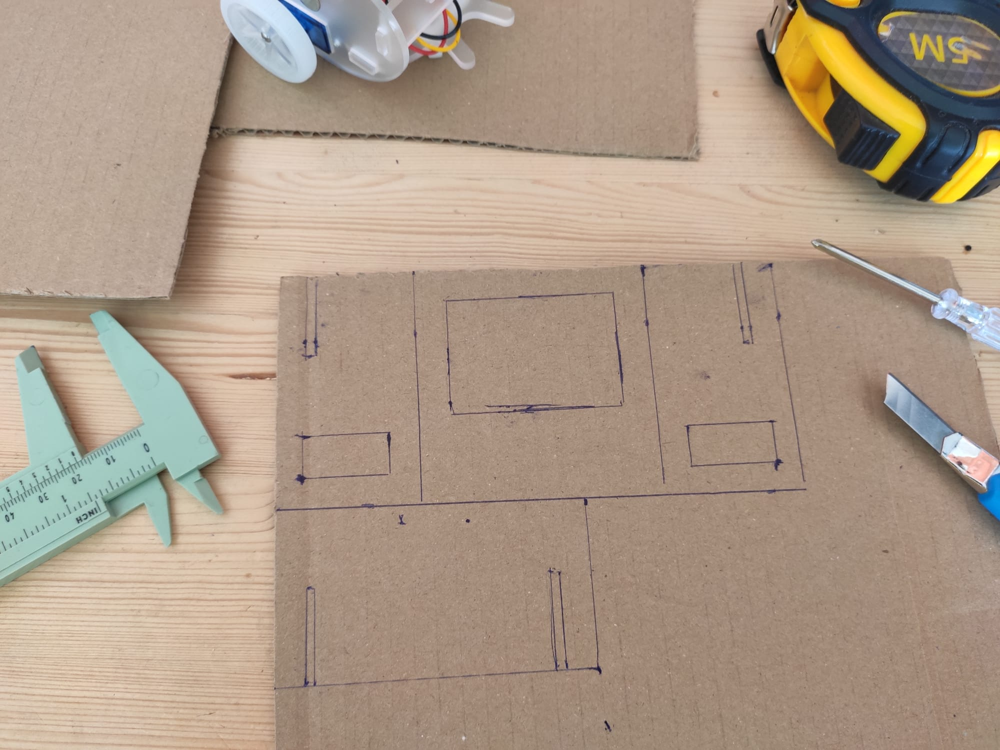
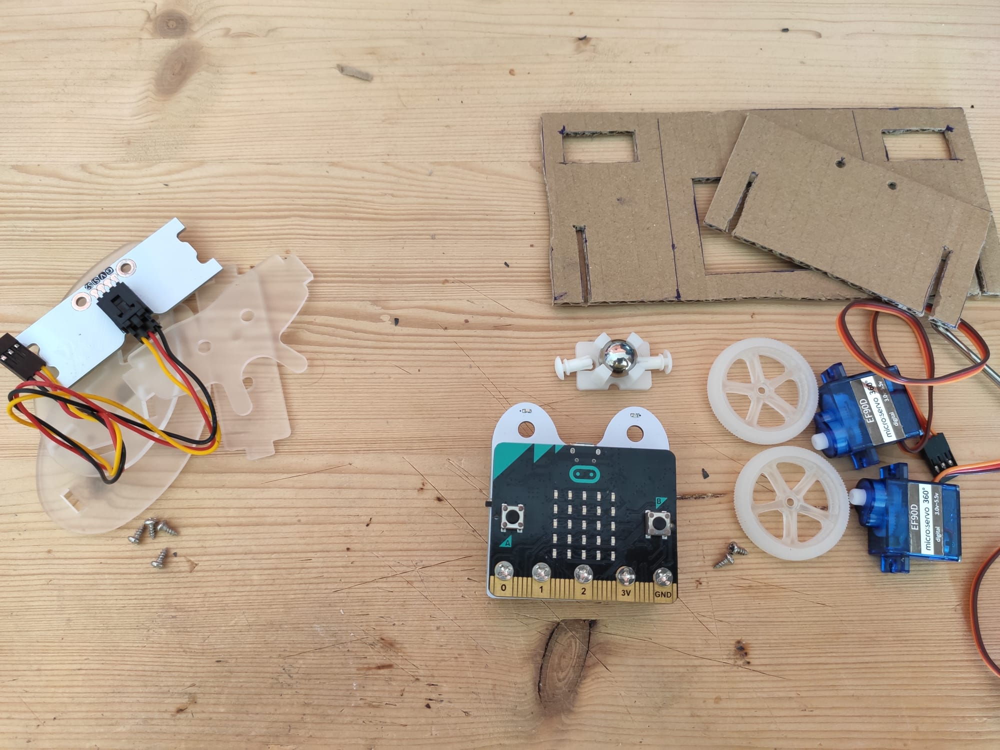
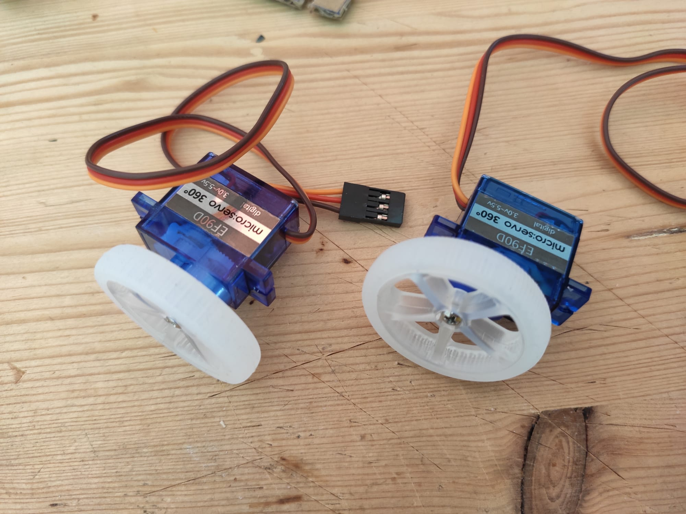
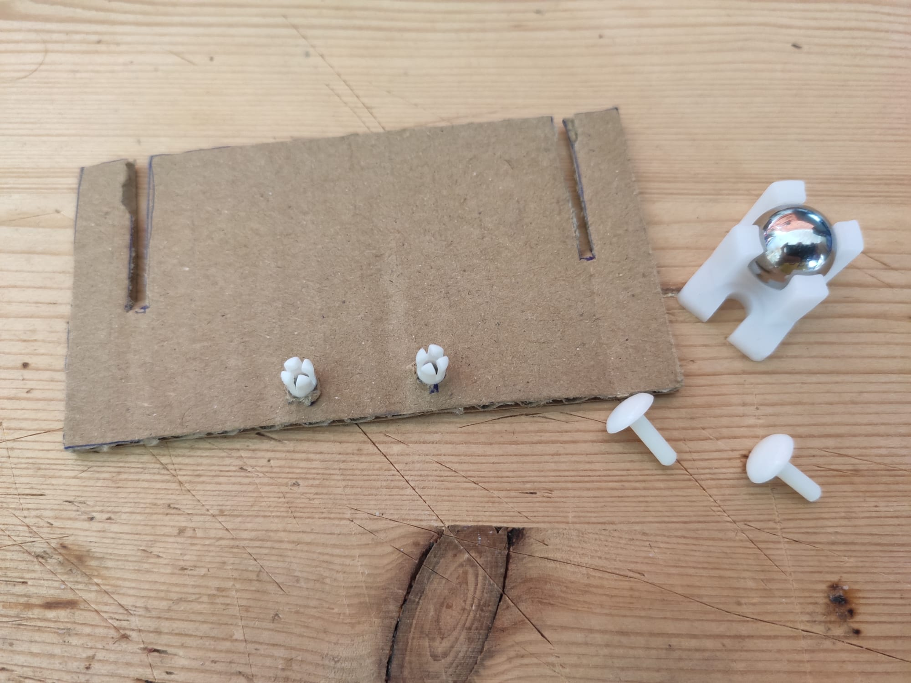

Designing a robot
In the previous days we learned how to control a robot, to make it move, to add sensors to its controller, but we did not yet manage to have what we could call an autonomous robot. Today you will learn how to make this possible.
Question
With everything you learned so far and the material at hand, do you think that you could put together an autonomous mobile robot that will explore it's surrounding while avoiding obstacles ?
Answer
Yes you might be able to. Indeed, while you can't connect the HC-SR04 and 2 motors on the buggy board, you can connect the ultrasonic sensor on one board and two motors on another board and make the two board communicate. The problem is that the robot frame of the buggy does not allow that. Today you'll learn how to start prototyping andd building your own frames to solve such problems.
What you will need
Every pair of learners will need:
- A computer equipped with a connection to internet and a browser (ideally Chrome),
- One micro:bit,
- A usb cable to connect the micro:bit to the computer,
- One bit:buggy kit,
- Some cardboard,
- A ruler,
- A cutter.
Cardbot
Why we'll use carboard ? Why we'll provide the first design?
Build the cardboard buggy by following the instructions below:
Missing the space for the switch in my version
| Draw | Cut, dismantle the buggy and discard elements on left | Mount the wheels | Put half of the rivets in |
|---|---|---|---|
|  |  |  |  |
| Mount the universal wheel | Mount the buggy board | Fold and mount the motors | Plug the motors and put the two parts together |
|---|---|---|---|
Figure: Mounting the cardbot.
Please put the discarded elements back in the buggy box, taking care of putting the screws back in their plastic bags.
Obstacle avoiding robot design
In this activity you will take the time to propose your own design to solve the original problem which was to build an obstacle avoiding robot.
Exercise 1
- 1.1 Design (without building) a new frame for your robot to be able to explore its environment and detect obstacles.
- 1.2 Choose among your design and the one proposed design which of the two you prefer and build it.
- 1.3 Program the mobile robot to explore the space and avoid obstacles.
Conclusion
This morning you learned how to design and build a robot frame with simple material. While there is a lot to learn in the field of mecanics, the theory is based on some strong fundations in physics and geometry. However, there si no need to get involved in the theory too hurly. You can already learn a lot of practical knowledge in doing what you did this morning, and this will only makes you learn the theory more easily later if you are interested in this field.